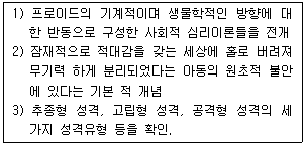
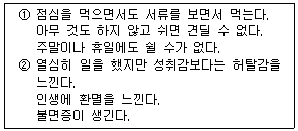
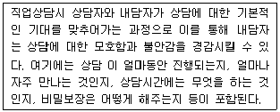
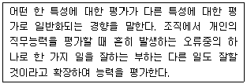
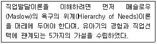
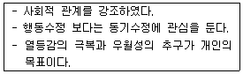
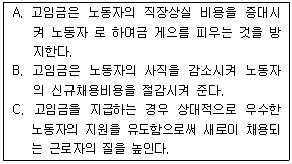
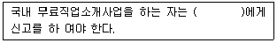

직업상담사-2급(구) (2002-08-11 기출문제)
1과목: 직업상담ㆍ심리학
1. 직무의 상대적 가치를 결정하기 위해 사용하는 방법은?
- 직무평가
- 직무진단
- 직무분석
- 직무기술
(정답률: 알수없음)

2. 낮은 동기를 갖은 내담자에게 자기효능감을 증진시키기 위한 방법에 포함되지 않는 것은?
- 내담자의 장점을 강조하며 격려하기
- 긍정적인 단계를 강화하기
- 내담자와 비슷한 인물이나 비디오테이프 보여주기
- 직업대안을 규명하기
(정답률: 알수없음)
3. 다음은 누구의 이론을 설명한 것인가?

- 에릭 프롬(Erich Fromm)
- 칼 융(Carl Jung)
- 카렌 호니(Karen Horney)
- 알프렛 아들러(Alfred Adler)
(정답률: 알수없음)
4. 다음은 직업상담시 활용할 수 있는 측정도구들에 대한 설명이다. 맞지 않는 것은?
- 자기효능감 척도는 어떤 과제를 어느 정도 수준으로 수행할 수 있는 능력을 갖추었다고 스스로 판단하는 지의 정도를 측정한다.
- 소시오그램은 원래 가족치료에 활용하기 위해 개발되었는데, 기본적으로 경력 상담 시 먼저 내담자의 가족이나 선조들의 직업 특징에 대한 시각적 표상을 얻기 위해 도표를 만드는 것이다.
- 역할놀이에서는 내담자의 수행행동을 나타낼 수 있는 업무상황을 제시해 준다.
- 카드분류는 내담자의 가치관, 흥미, 직무기술, 라이프스타일 등의 선호형태를 측정하는데 유용하다.
(정답률: 알수없음)
5. Herzberg는 직무요인을 위생요인(불만족 요인)과 동기요인(만족요인)으로 나누었다. 다음 중 만족요인에 속하는 것은 무엇인가?
- 회사정책과 관리
- 일 그 자체
- 개인 상호간의 관계
- 지위 및 안전
(정답률: 알수없음)
6. 다음 보기의 행동특성들과 관련 깊은 것끼리 올바르게 짝 지워진 것은?

- ① 내적통제소재
② 외적통제소재 - ① A형 성격
② B형 성격 - ① 과다 과업지향성
② 과다 인간관계지향 - ① 일중독증
② 소진
(정답률: 알수없음)
7. 신입사원이 조직에 쉽게 적응하도록 상사가 후견인이 되어 도와주는 경력 개발 프로그램은?
- 버디시스템
- 멘토십 시스템
- 경력지원시스템
- 조기발탁시스템
(정답률: 알수없음)
8. 윌리암슨(Williamson)의 직업문제 분류범주에 포함되지 않는 것은?
- 진로무선택
- 흥미와 적성의 차이
- 진로선택에 대한 불안
- 진로선택 불확실
(정답률: 알수없음)
9. 문항 변별도에 대한 설명 중 틀린 것은?
- 변별지수(D)는 0.00에서 1.00의 값을 갖는다.
- 문항변별도가 높으면 검사의 신뢰도를 향상시킬 수 있다.
- 문항변별도가 높다는 것은 높은 점수를 맞은 사람과 낮은 점수를 맞은 사람을 잘 구분 한다는 것이다.
- 변별지수(D)는 상위점수집단과 하위점수집단 각각에서 문항을 맞춘 사람들의 백분율 차이 값을 말한다.
(정답률: 알수없음)
10. 직업전환을 원하는 내담자를 상담할 때 일차적으로 고려해야 할 사항이 아닌 것은?
- 부모의 기대와 아동기 경험을 분석한다.
- 내담자가 직업을 바꾸는데 필요한 기술을 가지고 있는지 평가해야 한다.
- 나이와 건강을 고려해야 한다.
- 직업을 전환하는데 동기화가 되어 있는지 알아본다.
(정답률: 알수없음)
11. 한 개인이 자신의 일에 대하여 심리적 일체감을 가지고 자아상에서 자신의 일이 차지하는 중요도를 나타내는 개념을 무엇이라 하는가?(문제 오류로 2, 3번이 정답 처리되었습니다. 여기서는 2번을 누르면 정답 처리 됩니다.)
- 직무 관여(job involvement)
- 직무 만족(job satisfaction)
- 직무 공정성(job justice)
- 직무 부합도(job fitness)
(정답률: 알수없음)
12. 파슨스(Parsons)가 제안한 특성-요인이론의 핵심적인 세 가지 요소에 포함되지 않는 것은?
- 내담자 특성의 객관적인 분석
- 직업세계의 분석
- 과학적 조언을 통한 매칭(matching)
- 주변 환경의 분석
(정답률: 알수없음)
13. 직무분석 자료의 특성으로 적합하지 않은 것은?
- 최신의 정보를 반영해야 한다.
- 가공하지 않은 원상태의 정보이어야 한다.
- 논리적으로 체계화 되어야 한다.
- 한 가지 목적으로만 사용되어야 한다.
(정답률: 알수없음)
14. Super의 직업발달단계를 바른 순서로 나열한 것은?
- 성장기-탐색기-확립기-유지기-쇠퇴기
- 진로인식기-진로탐색기-진로준비기-취업
- 탐색기-성장기-확립기-유지기-쇠퇴기
- 진로탐색기-진로인식기-진로준비기-취업
(정답률: 알수없음)
15. 긴즈버그의 진로발달 3단계가 아닌 것은?
- 탐색기
- 잠정기
- 현실기
- 환상기
(정답률: 알수없음)
16. 정상적인 일반인의 성격검사로 적당하지 않은 것은?
- MMPI
- CPI
- EPPS
- 16PF
(정답률: 알수없음)
17. 다음 중 일반적인 직무분석의 방법이라고 볼 수 없는 것은?
- 관찰법
- 면접법
- 실험법
- 구조화된 설문지법
(정답률: 알수없음)
18. 직업상담사의 주요 업무가 아닌 것은?
- 구인 상담
- 창업 상담
- 진로 상담
- 산재보험 안내
(정답률: 알수없음)
19. 직업상담 장면에서 미결정자나 우유부단한 내담자에게 가장 우선되어야 할 직업상담 프로그램은?
- 미래사회 이해 프로그램
- 자신에 대한 탐구 프로그램
- 취업효능감 증진 프로그램
- 직업세계 이해 프로그램
(정답률: 알수없음)
20. 다음은 직업상담 과정 중 무엇에 대한 설명인가?

- 상담의 명료화
- 상담의 구체화
- 상담의 안정화
- 상담의 구조화
(정답률: 알수없음)
21. 청년기에 직업을 탐색하고 실험하는 심리사회적 유예기간을 거치면서 자기 정체감을 형성한다고 주장한 발달심리 학자는?
- Piaget
- Rogers
- Skinner
- Erikson
(정답률: 알수없음)
22. 홀랜드(Holland)의 직업 선호성 모형을 토대로 한 흥미검사에서는 직업흥미 유형을 6가지로 분류하고 있다. 이 중 관습적(conventional) 유형의 특징과 적합한 직업을 잘 나타낸 것은?
- 억세고, 강인하고, 실제적임: 농업, 기술자나 엔지니어, 군인
- 아이디어를 강조하고 추상적인 문제를 선호함: 과학 자, 의료서비스 분야
- 질서정연하거나 수를 다루는 작업을 선호함: 회계직, 사무직, 행정직
- 창의적인 자기표현을 잘하며 구조화된 상황을 싫어함 : 예술가, 저술분야
(정답률: 알수없음)
23. 다음은 평정의 한 오류를 설명한 것이다. 다음 중 어느 것인가?

- Leniency effect
- Halo effect
- Negativity effect
- Context effect
(정답률: 알수없음)
24. 다음은 회사의 신입사원 선발시험에서 회사에 이익이 되고자 계획된 선발 프로그램에 포함된 이익과 비용에 대한 설명이다. 적절하지 않은 것은?
- 선발 프로그램에 드는 비용
- 성공적인 사람을 고용하였을 때 회사의 이익
- 고용 후에 성공적이지 못한 사람 때문에 초래되는 비용
- 선발 프로그램이 실용도가 있기 위해서는 실시한 검사활동으로부터 얻어지는 이익이 선발 프로그램에 드는 비용을 초과해서는 안 된다.
(정답률: 알수없음)
25. 직업선택에서 비현실성의 문제와 관련 없는 것은?
- 흥미와 적성과 일치하는 직업이 여러 가지라 어떤 직 업을 선택해야 할지 결정하지 못한다.
- 자신의 적성수준보다 높은 적성을 요구하는 직업을 선택한다.
- 자신의 적성수준보다는 낮은 적성을 요구하는 직업을 선택한다.
- 자신의 적성수준에서 선택을 하지만, 자신의 흥미와 는 일치하지 않는 직업을 선택한다.
(정답률: 알수없음)
26. 다음 보기의 설명은 어떤 학자의 진로지도 및 선택이론에 해당되는가?

- 로(Roe)
- 수퍼(Super)
- 홀랜드(Holland)
- 터크맨(Tuckman)
(정답률: 알수없음)
27. 다음 중 직업 상담 과정을 올바르게 제시한 것은?
- 관계형성- 진단 및 측정 - 개입 - 목표설정 - 평가
- 관계형성 - 목표설정 - 진단 및 측정 - 개입 - 평가
- 관계형성 - 진단 및 측정 - 목표설정 - 개입 - 평가
- 관계형성 - 목표설정 - 개입 - 진단 및 측정 - 평가
(정답률: 알수없음)
28. 직장 내의 성희롱이 승진이나 특혜, 직무의 유지를 위해 강제적으로 이루어질 때 일어나는 성희롱을 어떤 유형의 성희롱인가?
- 적대적 환경(hostile environment)에 의한 성희롱
- 사회문화적(sociocultural) 성희롱
- 보복적(quid pro quo) 성희롱
- 생물학적(biological) 성희롱
(정답률: 알수없음)
29. 칼 로저스(Carl Rogers)가 제안한 내담자 중심적인 치료법에서 치료자가 갖추어야 할 자질에 속하지 않는 것은?
- 공감성
- 동정성
- 진실성
- 무조건적 존중
(정답률: 알수없음)
30. 다음의 내용과 관계있는 상담이론과 학자가 맞게 짝 지워진 것은?

- 실존주의적 상담 - Frankl
- 개인심리학적 상담 - Adler
- 형태주의적 상담 - Perls
- 현실치료적 상담 - Glasser
(정답률: 알수없음)
31. 진로지도는 총 5단계로 나뉜다. 각 단계에 대한 연결로 잘못된 것은?
- 1단계 - 자기 이해를 돕는 단계
- 2단계 - 직업세계의 이해를 돕는 단계
- 3단계 - 진로 상담 단계
- 4단계 - 진로계획 수립지도 단계
(정답률: 알수없음)
32. 미국의 국립직업지도협회(National Vocational Guidance Association: NVGA, 1982)에서 제시하고 있는 직업상담자 에게 요구되는 6가지 기술영역 중 해당되지 않는 것은?
- 관리능력
- 실행능력
- 조언능력
- 평가능력
(정답률: 알수없음)
33. 신뢰도계수 중에서 안정성계수라 불리는 것은?
- 검사-재검사 신뢰도계수
- 반분신뢰도계수
- 동형검사신뢰도계수
- 내적일관성계수
(정답률: 알수없음)
34. 직업선택에 대해 내담자들이 보이는 우유부단함의 일반적인 이유로 보기 어려운 것은?
- 자신이 선택하려는 직업에서 실패할 것에 대한 두려움
- 자신의 선택이 중요한 다른 사람에게 나쁜 결과를 줄 것이라는 죄의식
- 자신이 선택하려는 직업이 자신이 원하는 것을 완벽 하게 제공하지 못할 것이라는 믿음
- 자신이 선택을 빨리 하면 할수록 더 결과가 좋을 것 이라는 조급함
(정답률: 알수없음)
35. 직업상담자의 역할을 잘못 설명한 것은?
- 치료자 및 조언자의 역할
- 자료제공자의 역할
- 내담자의 보호자 역할
- 기관/단체들과의 협의자 및 직업심리검사의 해석자
(정답률: 알수없음)
36. 상담자는 내담자와 상담한 내용에 대해 비밀을 보장해야 하지만 상담자가 보고를 해야 하는 상황도 있다. 다음 중 상담자가 보고할 의무가 없는 상황은?
- 내담자가 적개심이 강할 때
- 가족을 폭행할 때
- 내담자가 범법 행위를 했을 때
- 미성년자로 성적인 학대를 당한 희생자일 때
(정답률: 알수없음)
37. 생산현장에서 호오손 연구(Hawthorne study)가 의미하는 것은?
- 물리적, 작업적 환경조건이 나빠졌을 때 생산능률이 떨어진다.
- 욕구수준에 따라 수행능력이 달라진다.
- 수행에 적합한 보상이 따라야 성공적 결과가 나타난다.
- 인간적, 사회적 환경에 의해 생산능률이 달라진다.
(정답률: 알수없음)
38. 직업상담의 목표로 적절하지 않은 것은?
- 예언과 발달
- 진로발달이나 직업문제에 대한 처치
- 결함보다 유능성에 초점을 맞추는 것
- 직업을 골라주는 것
(정답률: 알수없음)
39. 다음 중 설명이 틀린 것은?
- 조직몰입수준이 높은 사람이 조직몰입도가 낮은 사람에 비해 직무스트레스의 영향을 많이 받는다.
- 조직의 의사소통에 적극적으로 참여하는 집단이 그렇지 않은 집단보다 직무만족 및 직무성과가 높게 나타난다.
- 조직 의사소통에 의해 직무만족과 직무성과가 영향을 받으며 이러한 요인들이 제약 상황에 놓여 지면 스트레스가 발생한다.
- 적정한 수준까지 직무 스트레스를 증가시키는 것이 아주 낮은 스트레스 수준보다 성과를 개선할 수 있다.
(정답률: 알수없음)
40. 직업 상담에서 저항을 다루는 방법으로 적절하지 않은 것은?
- 내담자와의 상담관계를 재점검한다.
- 내담자의 고통을 공감해준다.
- 내담자가 위협을 느끼지 않도록 한다.
- 긴장이완법을 사용한다.
(정답률: 알수없음)
2과목: 직업정보론(노동시장론 포함)
41. 직업능력개발훈련 중 양성훈련 과정을 올바르게 설명한 것은?
- 근로자에게 직업에 필요한 기초적 직무수행능력을 습득시키기 위하여 실시하는 훈련
- 정보ㆍ통신매체 등을 이용하여 원격지에 있는 근로자 에게 실시하는 직업능력개발훈련
- 산업체의 생산시설을 이용하여 실시하는 직업능력개발훈련
- 직업에 필요한 기초적인 직무수행능력을 가지고 있는 자에게 더 높은 직무수행능력을 습득시키기 위한 직업능력개발훈련
(정답률: 알수없음)
42. 다음은 직업능력개발훈련 사업에서 지원하는 직업훈련에 관한 설명 중 잘못된 것은?
- 직업훈련을 받고자 하는 사람은 먼저 가까운 고용안정센터나 인력은행, 시ㆍ군ㆍ구 취업 정보 센터에 구직 등록을 해야 한다.
- 직업선호도 검사는 가까운 지방노동관서에서 약간의 수수료만으로 받을 수 있다.
- 직업선호도검사를 통해 본인에게 적합한 직업 및 훈련 직종을 알 수 있다.
- 직업훈련대상자의 선발은 해당 훈련기관에서 한다.
(정답률: 알수없음)
43. 직업훈련 및 직업안정에 대한 내용을 가장 올바르게 설명한 것은?
- 재직 중인 근로자가 전문대학, 대학교 또는 대학원에 진학할 경우 교육수강비용을 수시로 대부받을 수 있다.
- 직업안정은 구인개척 및 취업알선, 상담 등에 중점을 두고 있어 직업훈련과 직접적인 관련이 없다.
- 일정한 요건을 갖춘 실업자가 직업훈련을 받으면 교육훈련비 이외에 가족수당, 보육수당 등 훈련수당이 지급된다.
- 종업원 수가 일정 규모 이상인 사업체의 사업주는 매년 일정 비율 이상의 종업원을 의무적으로 교육훈련 시키거나 아니면 분담금을 납부하여야 한다.
(정답률: 알수없음)
44. 우하향하는 기울기를 갖는 등량곡선이 근본적으로 보여주는 바는 ( )의 원리이다. ( )속에 들어갈 가장 적당한 말은?
- 대체
- 상쇄
- 보완
- 교차
(정답률: 알수없음)
45. 일부 기업이 노동자의 생산성을 초과하는 임금, 즉 효율성 임금을 지급하는 이유에 대한 설명을 바르게 묶어 놓은 것은?

- A
- A와 C
- B
- A, B, C 모두
(정답률: 알수없음)
46. 한국표준직업분류(2000)의 계층적인 분류체계 구성순서로 맞는 것은?
- 대대분류-대분류-중분류-소분류-세분류
- 대분류-중분류-소분류-직종분류-세세분류
- 대분류-중분류-소분류-세세분류-세분류
- 대분류-중분류-소분류-세분류-세세분류
(정답률: 알수없음)
47. 임금이 10% 상승할 때 노동수요량이 20% 하락했다면 노동수요의 탄력성 값은?
- 0.5
- 1.0
- 1.5
- 2.0
(정답률: 알수없음)
48. 노동력의 동질성을 가정하고 있는 이론은?
- 신고전파이론
- 직무경쟁론
- 내부노동시장론
- 이중노동시장론
(정답률: 알수없음)
49. 다음 중 베커(Becker)가 제시하는 차별의 형태가 아닌 것은?
- 판매자에 의한 차별
- 소비자에 의한 차별
- 사용자에 의한 차별
- 근로자에 의한 차별
(정답률: 알수없음)
50. 우리나라의 인력 수요 예측 등은 어떤 방법으로 수집되고 가공될까?
- 직업현장에서 관찰이나 면접을 통해 수집하여 가공
- 직접 체험을 통하여 정보를 수집, 가공
- 각종 통계 자료를 이용하여 회귀분석 방식으로 추출
- 선진국의 직업관련 연구 자료를 분석하여 우리 실정에 맞도록 가공
(정답률: 알수없음)
51. 2000년에 발간된 취업알선직업코드 설명집에서 세세분류 코드가 있어도 세분류 코드를 사용할 수 있는 경우에 해당하지 않는 것은?
- 신입자(무경력자)로서 세세분류코드를 사용하기 힘든 경우
- 사업체에서 여러 가지 일을 복합적으로 수행할 사람 을 구인함으로써 적절한 세세분류를 선택하기 어려운 경우
- 경력자로써 세세분류의 일을 다 할 수 있는 사람을 입력하는 경우
- 세분류에는 속하나 세세분류에는 속하지 않아 적절한 세세분류가 없는 경우에 기타 개념으로 사용
(정답률: 알수없음)
52. 고용안정정보망 워크-넷(work-net)에서 직종별 구인/구직 수, 직종별 평균임금, 유효구인/구직수를 알아보기 위해서 다음 중에서 어디를 검색해야 하는가?
- 취업나침반
- 취업준비
- 직업탐색
- 직업심리검사
(정답률: 알수없음)
53. 다음은 한국표준직업분류(2000)에서 분류한 내용이다. 옳게 제시된 것은?
- 공사기업 감독자와 농업, 도소매업 및 음식숙박업 등의 관리자 중에서 행정 및 관리 업무는 0. 의회의원 , 고위임직원 및 관리자로 분류되는 것이 아니라 1. 전문가로 분류된다.
- 연구자가 교육업무에 종사할지라도 그 성격상 1. 전문가에서 그 전문분야에 따라 분류된다.
- 전문, 기술적인 통제업무를 수행하는 감독자는 관리직으로 보아 02. 행정 및 경영 관리자 또는 03. 일반 관리자로 분류된다.
- 계속적인 관찰이나 직무훈련 업무를 주로 지도하는 지도직은 지도하는 특정직종, 기능 또는 기계조작 종사자로 분류된다.
(정답률: 알수없음)
54. 근로자의 직업능력의 개발을 위한 훈련 등을 통하여 근로자가 직업능력을 최대한 개발· 발휘하게 함으로써 근로자의 고용증진 및 지위향상과 기업의 생산성 향상을 도모하고 경제·사회발전에 이바지하도록 하고자 하는 목적으로 제정된 법으로, 이전 법이 지니고 있던 제한적이고 규제적이었던 요소를 극복하고 훈련의 대상 및 영역을 확대하고 훈련기관의 자율성과 경쟁을 촉진하는 취지로 제정되어 1999년 1월1일부터 시행되고 있는 법은?
- 직업훈련기본법
- 직업훈련촉진기본법
- 직업훈련에 관한 특별조치법
- 근로자직업훈련촉진법
(정답률: 알수없음)
55. 노동의 한계생산이 3개이고 생산물가격이 1500원, 단위당 임금이 3000원이면 기업에서 노동의 고용량은?
- 증대시킬 것이다.
- 감소시킬 것이다.
- 변동 없다.
- 아무 관련이 없다.
(정답률: 알수없음)
56. 한국직업전망서(1999)는 한국의 대표직업 200여개에 대하여 설명하고 있다. 다음 중 한국직업전망서(1999)의 주요 구성항목이 아닌 것은?
- 관련 직업명
- 직업의 특성
- 작업환경
- 고용현황
(정답률: 알수없음)
57. 사용자의 부가급여 선호 이유가 아닌 것은?
- 절세(節稅)효과
- 근로자 유치
- 장기근속 유도
- 퇴직금부담 감소
(정답률: 알수없음)
58. 한국표준직업분류(2000)에서 직업으로 보는 활동은?
- 주식배당 등과 같은 재산수입이 있는 경우
- 경마, 경륜 등에 의한 배당금 수입이 있는 경우
- 토지나 금융자산을 매각하여 수입이 있는 경우
- 계절적으로 행해지는 생산 활동에 종사하는 경우
(정답률: 알수없음)
59. 시장경제를 채택하고 있는 나라의 노동시장에는 직종별 임금격차가 존재한다. 그 존재의 이유로 적절하지 못한 것은?
- 직종에 따라 근로환경의 차이가 존재하기 때문이다.
- 직종에 따라 노동조합 조직율의 차이가 존재하기 때문이다.
- 직종 간 정보의 흐름이 원활하기 때문이다.
- 노동자들의 특정 직종에 대한 회피와 선호가 다르기 때문이다.
(정답률: 알수없음)
60. 1960년 이후 종사자 비중이 계속 증가하고 있는 산업은?
- 농림·어업
- 광업
- 제조업
- 서비스업
(정답률: 알수없음)
61. 다음 중 국가기술자격법 종목에 포함되지 않는 것은?
- 임상심리사 2급
- 컨벤션기획사 2급
- 소비자전문상담사 2급
- 자동차관리사 2급
(정답률: 알수없음)
62. 응시하고자 하는 종목에 관한 공학적 기술이론 지식을 가지고 설계ㆍ시공ㆍ분석 등의 기술업무를 수행할 수 있는 능력의 유무를 검정하는 국가기술자격 등급은?
- 기능장
- 기사
- 산업기사
- 기능사
(정답률: 알수없음)
63. 다음 중 노동시장정보에 대한 설명이 가장 적절하지 않은 것은?
- 노동시장정보를 수집ㆍ 정리하고 분석ㆍ가공한 결과를 수요자에게 제공하는 일련의 과정 또는 체계이다.
- 직업선택의 효율성을 증대시키고 합리적인 인적자원 관리를 통해 불필요한 이직을 최소화한다.
- 직업, 산업, 임금, 근로시간, 노동시장 동향, 노동력의 인구학적 특성뿐만 아니라 구인ㆍ구직, 직업훈련, 노동 관련제도 및 정책에 관한 정보를 포함한다.
- 우리나라의 경우 노동시장정보자료의 수집ㆍ분석ㆍ가공은 통계청에서 주로 담당하고 있다.
(정답률: 알수없음)
64. 한국표준직업분류(2000)와 관련한 다음의 설명 중 옳은 것은?
- 업무가 주로 동력공구 및 기타 도구를 가지고 수행하는 작업 즉 사용된 재료 및 도구와 최종제품을 이해하는 기능이 필요한 직무라면 대분류 8에 해당된다.
- 작업이 경험과 작업에 대한 이해가 필요 없고 간단하고 일상적인 성격이며 손과 수공구의 사용과 약간의 육체적인 노력과 제한된 창의력이 필요한 직업은 대 분류 7에 해당된다.
- 대규모적이고 때로는 고도의 자동화된 산업용 기계 및 장비를 조작하고 부분품을 가지고 제품을 조립하는 경우는 대분류 8에 해당된다.
- 기계조작만이 아니고 컴퓨터에 의한 기계제어 등 기술적 혁신에 적응할 수 있는 능력을 포함한 기계 및 장비에 대한 경험과 이해가 요구되는 것은 대분류 7 에 속한다.
(정답률: 알수없음)
65. 후방굴절형(backward-bending)노동공급곡선에서 후방으로 굴절된 부분은?
- 임금변동에 따른 대체효과만이 존재하는 부분이다.
- 임금변동에 따른 소득효과만이 존재하는 부분이다.
- 임금변동에 따른 대체효과가 소득효과보다 큰 부분이다.
- 임금변동에 따른 소득효과가 대체효과보다 큰 부분이다.
(정답률: 알수없음)
66. 소위 3D업종이라고 하는 직종은 육체적 보상을 받지 못하면서도 다른 업종에 비하여 임금수준이 낮은 경우가 있다. 이러한 임금격차의 원인은?
- 균등화 임금격차(equalizing wage differentials)
- 보상적 임금격차(compensating wage differentials)
- 가속적 임금격차(accentuating wage differentials)
- 과도적 임금격차(transitional wage differentials)
(정답률: 알수없음)
67. 다음 중 노동부장관의 인가를 받아 최저임금의 적용을 제외할 수 있는 근로자는?
- 임시직 근로자
- 계약직 근로자
- 수습사용중인 근로자
- 외국인 근로자
(정답률: 알수없음)
68. 포괄역산제에 대한 설명으로 맞는 것은?
- 성과배분을 노사 간의 합의 없이 사업주가 법률상 요구되는 제반 규정을 형식적으로 이행하기 위해 사후적으로 시간급을 산정하는 방법
- 노사 간에 합의한 기본임금 기준 월급여액을 가지고 각종 법정수당을 다 지급한 것으로 간주하여 시간급으로 환산하는 방법
- 노사 간에 합의한 평균임금 기준 월급여액을 가지고 각종 법정수당을 다 지급한 것으로 간주하여 시간급으로 환산하는 방법
- 노사 간에 합의한 통상임금 기준 월급여액을 가지고 각종 법정수당을 다 지급한 것으로 간주하여 시간급으로 환산하는 방법
(정답률: 알수없음)
69. 경쟁상대국 대비 노동비용을 재는 척도로는 지불표시(弗貨表示) 노임단가가 있다. 이를 바르게 설명한 것은?
- (실질임금 / 실질노동생산성) x ( 1 / 환율)
- (명목임금 / 명목노동생산성) x ( 1 / 환율)
- (실질임금 / 명목노동생산성) x ( 1 / 환율)
- (명목임금 / 실질노동생산성) x ( 1 / 환율)
(정답률: 알수없음)
70. 분단노동시장(segmented labor market)가설의 출현배경이 아닌 것은?
- 능력분포와 소득분포의 상이
- 교육개선에 의한 빈곤퇴치 실패
- 소수인종에 대한 현실적 차별
- 동질의 노동에 동일한 임금
(정답률: 알수없음)
71. 다음 중 가장 먼저 생성된 노동조합 형태는?
- 산업별 노동조합
- 기업별 노동조합
- 직업(종)별 노동조합
- 일반조합
(정답률: 알수없음)
72. 우리나라 임금체계에 관한 다음의 설명 가운데 적합하지 않은 것은?
- 소정근로시간과 관련된 정액급여는 기본급과 제 수당으로 나누어진다.
- 통상임금의 산정에서 초과급여, 특별급여, 업적수당, 생활보조수당을 포함한다.
- 평균임금은 퇴직금, 휴업수당, 산재보상 등의 산출기준임금이며, 고용기간 중에서 근로자가 지급받고 있던 평균적인 임금수준을 말한다.
- 노동법에서 기준임금이 통상임금과 평균임금으로 이원화되어 있어 기업에서의 임금관리가 어려운 측면이 있다.
(정답률: 알수없음)
73. 다음 중 고용안정사업이 아닌 것은?
- 건설근로자 등 고용 안정지원
- 고용근로자에 대한 훈련 비용지원
- 고용촉진지원
- 고용조정지원
(정답률: 알수없음)
74. 한국직업사전의 직업기술 구성요소 중 수행가능 직무기술이란 무엇을 의미하는가?
- 해당 직업에 종사하는 사람이 수행할 수 있는 일을 말한다.
- 해당 직업에 종사하는 사람이 사업장에 따라 할 수도 있고 하지 않을 수도 있는 일을 말한다.
- 해당 직업에 종사하는 사람이 사업장에 따라 가끔 수행해야 할 일을 말한다.
- 해당 직업에 종사하는 사람이 수행 가능하도록 교육훈련 되어야 할 일을 말한다.
(정답률: 알수없음)
75. 새로운 산업의 출현과 이에 따른 기술변화 및 산업구조의 변화를 반영하기 위하여 통계청에서는 2000년 3월 1일 한국표준산업분류를 개정하였다. 다음 중 개정된 내용과 일치하지 않는 것은?
- 제조업, 도소매업 및 서비스업 부분의 수리업은 해당 산업으로 분류하였다.
- 부동산, 임대, 사업서비스업을 부동산 임대업과 사업 서비스업으로 분리하여 대분류하였다.
- 공공, 사회, 개인서비스를 오락, 문화 등의 서비스와 공공, 개인서비스로 분리하여 대분류하였다.
- 통신업의 비중을 고려, 이를 대분류로 신설하였다.
(정답률: 알수없음)
76. 다음 중 성공적인 제안제도를 실시하기 위한 요건이 아닌 것은?
- 제안은 반드시 관리자 또는 감독자와의 협의를 거치도록 한다.
- 심사를 거쳐 채택된 제안에 대해서는 충분한 보상을 한다.
- 제안을 장려·지도하는 방식을 제도화한다.
- 제안을 신속하고 공평하게 처리·심사한다.
(정답률: 알수없음)
77. 기업의 내부노동시장에서 근무연수에 비례하여 근로자의 생산성이 향상된다는 기본사고에 근거하는 승진정책은 무엇인가?
- 연공주의
- 직무주의
- 성적주의
- 성과주의
(정답률: 알수없음)
78. 다음 중 법적인 의무고용과 가장 거리가 먼 자격증은?
- 산업위생관리기사
- 수질환경산업기사
- 폐기물처리산업기사
- 전기철도기술사
(정답률: 알수없음)
79. 다음 중 잘못 기술된 것은 무엇인가?
- 직업정보의 사용목적은 한 직업에서 근로자의 더 좋은 생활 형태를 비교함이다.
- 직업정보를 제공할 때 자료의 출처는 밝혀야 하나 생산과정을 공개하지 않아도 된다.
- 직업정보 분석은 관점을 가지고 분석한 형태와 원 자료를 가지고 직업정보 분석가들에 의하여 다각도로 해 석될 수 있는 여지를 갖는 형태로 구분할 수 있다.
- 고용구조특별조사는 통계청에서 제시하는 정보이다.
(정답률: 알수없음)
80. 일국(一國) 경제에서 최적인적자원 배분이 이루어 졌다고 하는 때는 언제인가?
- 동일노동에 대해 동일임금이 지급될 때
- 완전고용을 이루었을 때
- 자연실업률 상태에 도달하였을 때
- 경제원칙이 달성되었을 때
(정답률: 알수없음)
3과목: 노동관계법규
81. 직업안정법의 목적이 아닌 것은?
- 근로자에게 취직의 기회 제공
- 근로자에 대한 부당한 해고의 제한
- 산업에 필요한 노동력의 충족 지원
- 균형 있는 국민경제의 발전
(정답률: 알수없음)
82. 근로기준법상의 임금의 지급방법에 관한 원칙으로만 연결된 것은?
- 통화불의 원칙, 직접불의 원칙, 정액불의 원칙, 일시 불의 원칙
- 통화불의 원칙, 직접불의 원칙, 전액불의 원칙, 매월 1회 이상 정기불의 원칙
- 통화불의 원칙, 정액불의 원칙, 전액불의 원칙, 일시 불의 원칙
- 직접불의 원칙, 정액불의 원칙, 전액불의 원칙, 매월 1회 이상 정기불의 원칙
(정답률: 알수없음)
83. 근로조건명시의무 위반에 대한 구제조치로서 근로기준법상 규정된 것이 아닌 것은?
- 강제이행의 청구
- 손해배상의 청구
- 근로계약의 해제
- 사용자에 대한 벌칙의 부과
(정답률: 알수없음)
84. 다음 중 직업정보제공사업자의 준수사항이 아닌 것은?
- 구직자의 이력서 발송을 대행하거나 구직자에게 취업 추천서를 발부하지 아니할 것.
- 직업정보간행물 또는 직업정보제공사업의 광고문에 (무료)취업상담ㆍ취업추천ㆍ취업지원 등의 표현을 사용하지 아니할 것
- 직업정보간행물의 구인ㆍ구직의 광고에는 직업정보제공사업자의 주소 또는 전화번호를 기재하고, 구인ㆍ 구직자의 주소 또는 전화번호를 기재하지 아니할 것
- 구인자의 업체명(또는 성명)이 표시되어 있지 아니하거나 구인자의 연락처가 사서함 등으로 표시되어 구인자의 신원이 확실하지 아니한 구인광고를 게재하지 아니할 것
(정답률: 알수없음)
85. 직업안정법상 취직하고자 하는 자의 능력과 소질에 적합한 직업의 선택을 용이하게 하기 위하여 실시하는 직업적성검사, 직업정보의 제공, 직업상담 등을 무엇이라 하는가?
- 직업소개
- 직업지도
- 직업알선
- 근로자공급
(정답률: 알수없음)
86. 직장 내 성희롱의 성립요건으로 가장 옳지 않은 것은?
- 직장 내 성희롱 행위자와 피해자가 있을 것
- 직장 내 지위를 이용하거나 업무와 관련하여 이루어 질것
- 직장 내에서 성희롱이 이루어질 것
- 성적인 언어나 행동에 의하거나 이를 조건으로 할 것
(정답률: 알수없음)
87. 경영상 이유에 의한 해고(정리해고)에 관한 기술로서 잘못된 것은?
- 사용자는 경영상 이유에 의하여 근로자를 해고하고자 하는 경우에는 긴박한 경영상의 필요가 있어야 한다.
- 사용자는 해고를 피하기 위한 노력을 다하여야 하며 합리적이고 공정한 해고의 기준을 정하고 이에 따라 그 대상자를 선정하여야 한다.
- 일정규모의 인원을 해고하고자 할 때에는 노동위원회의 승인을 받아야 한다.
- 남녀의 성별을 이유로 하여 차별하여서는 아니 된다.
(정답률: 알수없음)
88. 고용정책기본법에 명시된 규정으로 고용정책상 국가가 수행하여야 할 시책으로 볼 수 없는 것은?
- 국민 각자의 능력과 적성에 적합한 직업에 취업과 산업에 필요한 인력의 확보를 위한 직업소개, 직업지도 또는 고용정보의 수집 및 제공에 관한 사항.
- 경기변동, 산업구조변화에 따른 실업예방, 사업주의 고용조정에 대한 지원 및 실업자의 취직촉진 등 고용 안정에 관한 사항.
- 고용보험 및 기타 고용안정과 직업능력개발 등에 관 한 사항
- 인력부족 예방과 취직 곤란한자에 대한 취직촉진 지원, 그리고 근로자의 임금확보 및 노사관계의 안정에 관 한 사항
(정답률: 알수없음)
89. 근로기준법상 도급근로자에게 지급되어야 하는 임금액은?
- 평균임금의 70%
- 통상임금의 70%
- 최저임금
- 명문의 규정을 두고 있지 않다.
(정답률: 알수없음)
90. 근로기준법의 적용범위에 관한 다음 설명 중 옳은 것은?
- 동거의 친족을 1인이라도 사용하는 사업장에는 근로기준법이 적용되지 않는다.
- 일용직근로자에게는 근로기준법이 적용되지 않는다.
- 상시 3인의 근로자를 사용하는 사업장에는 근로기준법의 모든 규정이 적용된다.
- 1주 소정근로시간이 15시간 미만인 근로자에 대하여 는 일부규정이 적용되지 않는다.
(정답률: 알수없음)
91. 다음 중 고용정책기본법에 명시되어 있는 국가의 고용정책의 기본원칙이 아닌 것은?
- 직업선택의 자유존중
- 근로의 권리존중
- 사업주의 자주적인 고용관리 존중
- 실업의 예방
(정답률: 알수없음)
92. 현행 헌법의 노동관계조항의 내용과 다른 것은?
- 국가는 법률이 정하는 바에 의하여 최저임금제를 시행하여야 한다.
- 공무원인 근로자는 법률이 정하는 경우에 한하여 단 결권ㆍ단체교섭권 및 단체행동권을 갖는다.
- 국공영기업체에 종사하는 근로자의 단체행동권은 법률이 정하는 바에 의하여 이를 제한 할 수 있다.
- 여자의 근로는 고용ㆍ임금 및 근로조건에 있어서 별을 받지 아니한다.
(정답률: 알수없음)
93. 고용보험제도의 고용유지 지원 사업에 속하는 사업이 아닌 것은?
- 휴업수당 지원
- 근로시간 단축지원
- 근로자 사외파견 지원
- 인력재배치 지원
(정답률: 알수없음)
94. 근로자직업훈련촉진법에 규정된 재해 관련 내용 중 틀린 것은?
- 직업능력개발훈련을 실시하는 자는 직업능력개발훈련 을 받는 훈련생이 훈련으로 인하여 재해를 입는 경우 에 재해위로금을 지급하여야 한다.
- 재해위로금의 재정은 원칙적으로 정부가 부담하되, 훈련시설의 하자나 실시자의 귀책사유로 인하여 재해가 발생한 경우에는 실시자가 부담하여야 한다.
- 직업능력개발훈련을 받는 훈련생이 산업재해보상보험 법에 적용 대상인 경우에는 재해위로금은 지급할 필요가 없다.
- 재해위로금은 근로기준법(제8장)의 규정을 준용하여 지급하되, 위로금 산정은 산업재해보상보험법의 규정에 의하여 노동부장관이 정하는 금액으로 한다.
(정답률: 알수없음)
95. 고용보험법상 구직급여의 계산에서 기초일액이 최저임금으로 계산된 최저기초일액에 미달하는 경우 구직급여일액은 어떻게 계산하는가?
- 기초일액의 100%로 계산
- 최저기초일액의 100%로 계산
- 최저기초일액의 90%로 계산
- 최저기초일액의 50%로 계산
(정답률: 알수없음)
96. 고령자고용촉진법에 대한 설명 중 틀린 것은?
- 고령자는 인구, 취업자의 구성 등을 고려하여 대통령령이 정하는 연령 이상인 자를 말한다.
- 사업주라 함은 근로자를 사용하여 사업을 행하는 자를 말한다.
- 근로자라 함은 근로기준법 제14조의 규정에 의한 근로자를 말한다.
- 대통령은 고령자의 취업지도와 취업시책 등에 필요한 전문 인력과 시설을 갖춘 단체를 고령자인재은행으로 지정할 수 있다.
(정답률: 알수없음)
97. 고령자고용촉진법상 기준 고용율 이상으로 고령자를 고용하도록 노력해야 하는 대상은?
- 근로기준법 적용 사업장
- 상시 30인 이상 사업장
- 상시 100인 이상 사업장
- 상시 300인 이상 사업장
(정답률: 알수없음)
98. 다음 중 단체행동권이 제한되는 대상이 아닌 자는?
- 주요방위산업체 근로자 중 전력ㆍ용수업무에 종사하는 자
- 선원법에 의한 선원
- 사립학교 교원
- 철도청에서 사실상 노무에 종사하는 기능직 공무원
(정답률: 알수없음)
99. 다음 중 남녀고용평등법의 위반이 아닌 것은?
- 근로자의 모집 시 여성에게만 용모와 키를 제한하는 경우
- 전문직 남성과 사무보조직 여성의 임금 차별
- 감원대상에서 여성을 우선적으로 선정하는 경우
- 남녀차등 정년제
(정답률: 알수없음)
100. 다음 ( )속에 들어갈 알맞은 말은?

- 노동부 장관
- 직업안정기관의 장
- 시ㆍ도지사
- 시장, 군수, 구청장
(정답률: 알수없음)